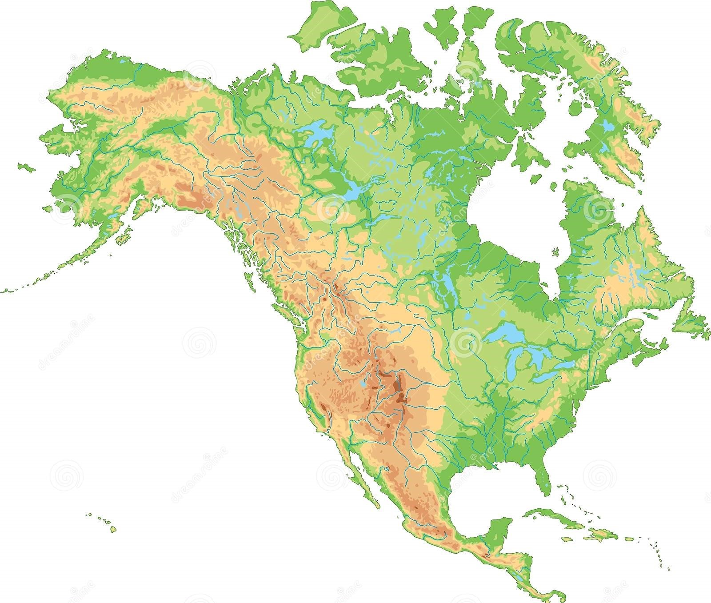
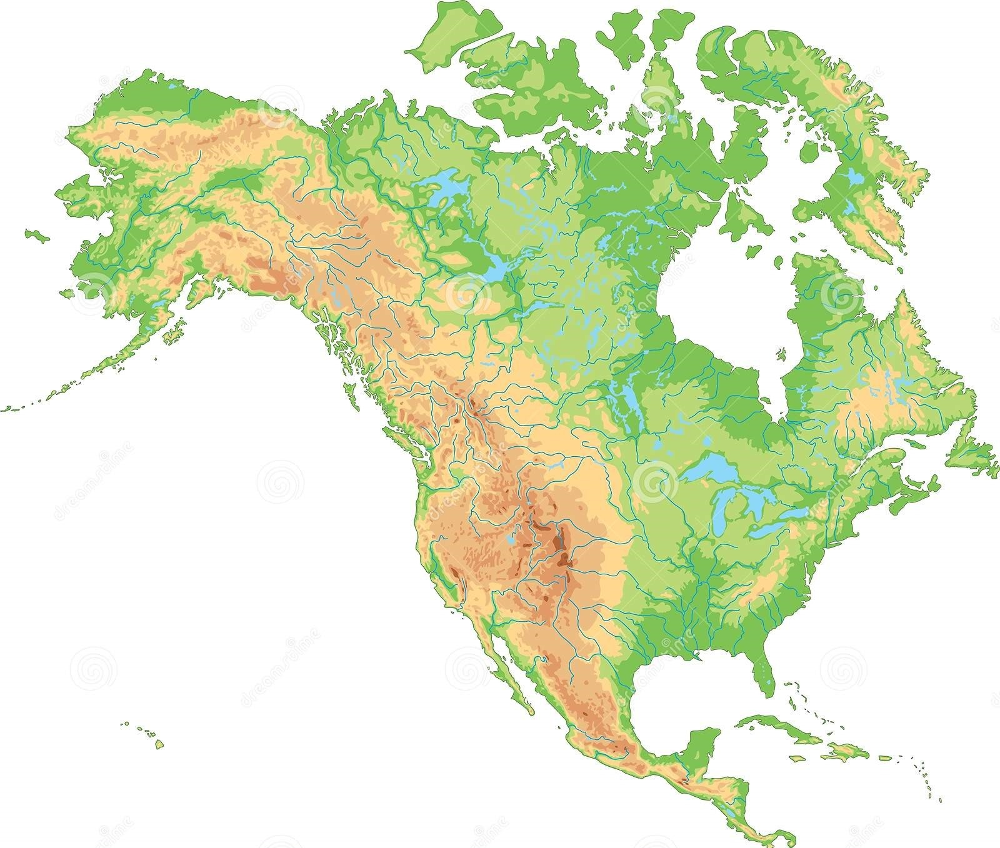

En la actualidad no existen monos Norteamericanos más alla de zoos o laboratorios.
Se adjunta un video de lo que podria pasar si existieran monos alli ante la facilidad de conseguir armas en EEUU.
 
